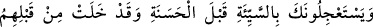
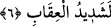

kalmakla tavsîf edilenler başkaları değil, sadece onlardır. Onların sürekli kalacakları
yer de başka bir yer değil, sadece ateştir. Böylece büyük günah işleyenlerin
cehennemde sürekli kalmayacakları sâbit olmuştur.
et-Te’vîlât’ta şöyle der: “Allah Teâlâ’nın kendileri hakkında ezelde “İşte bunlar
cehennemliklerdir, ama ben buna aldırmam!” buyurduğu kişiler bunlardır. Böylece
ilelebed cehennemlik olmuşlardır.”
Şirk ve inkâr, mâsıyetlerin ve günahların en büyüklerindendir. Hz. Peygamber (a.s.)’ın
Allah Teâlâ’dan naklen şöyle dediği rivâyet edilir:
“Allah Teâlâ buyurur ki: “Kulum! Bana kulluk etmedin, ama bana hiçbir şeyi de
ortak koşmayarak dâimâ benden ümitdvar oldun. Böyle yaptığın için seni bağışladım.
Benim karşıma yeryüzü dolusu hatayla bile gelmiş olsaydın seni yeryüzü dolusu
mağfiretle karşılardım. Seni bağışlıyorum ve yaptıklarına aldırmıyorum.”[108] Yani,
eğer bana ortak koşmazsan, her tür şirkten uzak durmandan dolayı seni bağışlarım. Her
tür şirkten korunmak ise ancak nefsin ıslahından sonra olabilir.
Şu halde kişi, nefsinin esîridir. İnsanın hevâsı boynundaki bukağı gibidir. Dünyada
kendisinden hiç ayrılmayan bu bukağı, mânevîdir ve ancak kıyamet günü görülebilir
olacaktır. Çünkü burada bâtın olan orada zâhir olacaktır.
Hikâye edildiğine göre isyankârlardan birisi öldü. Adamın kabrini kazdıklarında
çukurda büyük bir yılan gördüler. Başka bir yer kazdılar, fakat aynı yılanı orada da
gördüler. Sonra bir daha bir daha derken otuza yakın kabir kazdılar, fakat yılanın her
kabirde karşılarına çıktığını gördüler. Hiç kimsenin Allah’tan kaçamayacağını ve hiç
kimsenin O’na galip gelemeceğini anlayınca adamı yılanla birlikte gömdüler. İşti bu
yılan, adamın amelidir.
Sa‘dî (k.s.) der ki:
Ey birader, kötülerin işlerinden utan,
Ki iyilerin yüzünde sevgili olasın.
Sana ârdan başını öne eğmekten başka bir şey kalmaz,
Kendi amellerin etrafına geldiği vakit.
6. (Müşrikler) senden iyilikten önce kötülüğü acele istiyorlar. Halbuki onlardan
önce ibret alınacak nice azap örnekleri gelip geçmiştir. Doğrusu insanlar